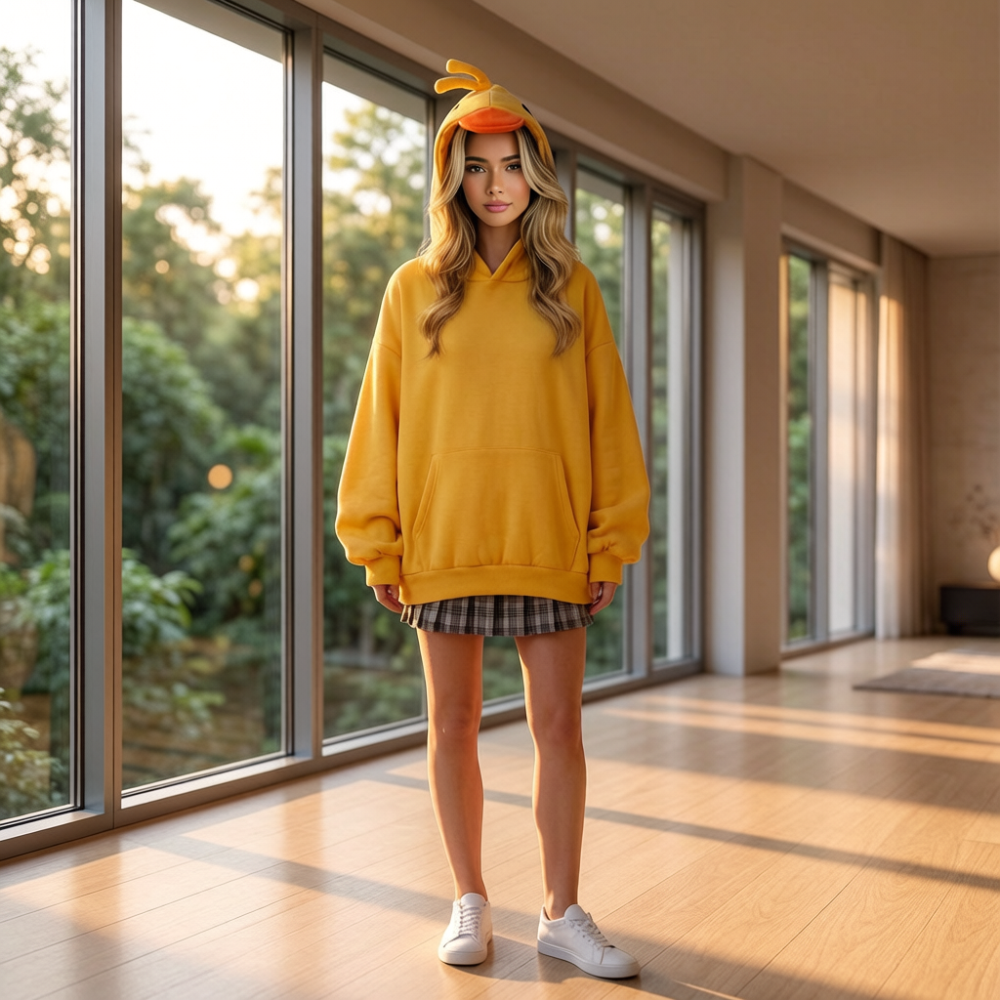

AURA
Home
Archive
Categories
▾
Wellness
Street
Beauty
Aura St. Claire
Archive
A quiet editorial wall — imagery, motion, and mood in one place.
All
Wellness
Street
Beauty
Noir Silk
Lace Drift
Glass Light
City Pulse
Sidewalk Silhouette
Square Study
Veil Motion
Afterglow
Quiet Form
Soft Volume
Line Study
Night Walk
Luminous
Veil II
Grid Walk
Crossing
Dusk
Still
Drift
Porcelain
Meridian